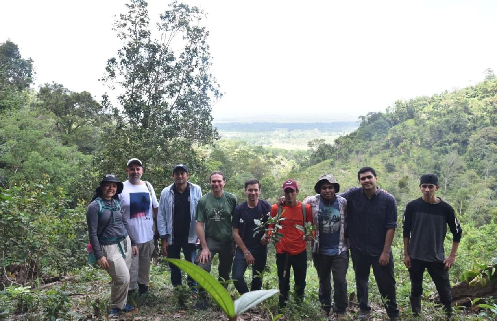
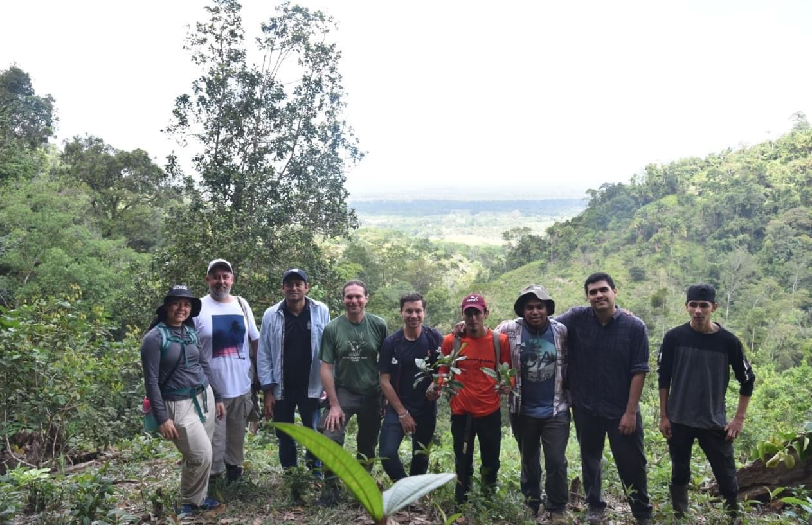

Mesa principal compuesta por las autoridades municipales, representantes de la Junta de Agua.
Entrega de estudio en físico a delegado de la Junta de Agua de San Francisco, Atlántida.
Mesa Principal:
Ponencia del Representante de la Fundación Parque Nacional Pico Bonito. -Fupnapib
Más de 250 Personas reprentantes de la sociedad civil,
Aspirantes a Cargos Públicos, y las Autoridades del Municipio
Entrega de Estduio a Alcaldes de San Francisco, Atlántida de parte de Cehprodec.
#FUPNAPIB en el marco del Proyecto de Conservación de Especies Arbóreas Amenazadas, financiado por Fauna & Flora, participó en el IX Simposio Mundial de Magnolia.
El equipo coordinador del proyecto explicó a los expertos nacionales e internacionales el trabajo de investigación que se ha venido realizando y la experiencia que se tiene hasta la fecha, así como también las acciones a realizar para la protección y conservación in situ de la especie.
La especie de Magnolia atlantida conocida como Redondo negro, es emblemática en el sector por ser endémica del departamento de Atlántida y por su importancia biológica y ecológica ha sido priorizada dentro de las estrategias de conservación a nivel de especies en el Parque Nacional Pico Bonito.
En la reunión participaron representantes de diferentes organizaciones #FUPNAPIB, #ASALBOH, #UNACIFOR, Celaque Asesores, #MAPANCE, #SINFOR, #AtlantaBotanicalGarden, Conecta+, UICN y Universidad de Guadalajara:CUCBA
Monitorear el avance de las actividades del proyecto de árboles, del cual son nuestro socio aliado.
Reconocer las condiciones in situ de la especie Magnolia ciroorum, así como la experiencia participativa comunitaria en actividades para la conservación del recurso bosque.
Conocer un fragmento de la biodiversidad existente en la red de senderos del Parque Nacional Pico Bonito.
El primer día, se llevó a cabo una jornada de monitoreo y seguimiento de las actividades del proyecto de árboles amenazados en el #PNPB implementado por el equipo de la #FUPNAPIB en conjunto con el socio local LARECOTURH; en la que nos acompañó el Gerente de Programa para Centroamérica de #FaunayFlora, Rich Howorth.
En el segundo día, se realizó una gira de campo en una de las zonas de incidencia del Proyecto en el #PNPB.Durante la visita, se pudo observar la nueva especie #Magnoliaciroorum; donde el equipo de Fauna & Flora pudo conocer en persona y fotografiar la especie.
Además, el equipo técnico de la #FUPNAPIB y el actor clave comunitario, Kelvin Cubas, compartieron la experiencia participativa y el trabajo realizado hasta el momento para la conservación del bosque y, de esta especie de árbol en particular.
Finalmente, el tercer día se visitó la red de senderos del Centro de Visitantes "Gerardo Antonio Rodríguez" del #ParqueNacionalPicoBonito, donde un guía comunitario turístico, Francisco Anchecta, interpretó el patrimonio, los bienes de interés cultural y los espacios naturales a Rich Howarth y al equipo técnico de la FUPNAPIB.
 

A cargo de la gerente del Programa Regional para las Americas y el Caribe de Fauna & Flora International, Hazel Akester, y en seguimiento a los talleres que ha estado impartiendo el equipo de Árboles de FFI, este día se desarrolló una doble jornada, en la que se abordaron los temas de “Recolección de Semillas” y “Finalización de La Teoría del Cambio”; dirigido a Actores Claves identificados del Proyecto de Conservación de Especies Arbóreas Amenazadas en el Parque Nacional Pico Bonito (PNPB).
Participaron de forma presencial y virtual representantes de UNAH-CURLA; Carrera de Ingeniería Forestal; #ICF #LARECOTURH #SERNA, #ASALBOH y equipo técnico de la #FUPNAPIB.
Miembros de la Mesa Departamental Ambiental, acuerdan en reciente reunión, realizar próximamente asamblea con las organizaciones de sociedad civil, academia e instituciones gubernamentales que la conforman; para elegir la nueva Junta Coordinadora que estará a cargo de darle trámite al plan de trabajo para avanzar en los objetivos que le dieron origen a esta articulación.
La expectativa de #FUPNAPIB es que se pueda consolidar esta instancia como un referente de un espacio multiactor en el que las acciones de sociedad civil juegan un papel protagónico para articular con las instituciones de gobierno, con el propósito de lograr que la situación ambiental a nivel del departamento de Atlántida pueda dar un giro y comenzar a ver avances en las soluciones a dichas problemáticas.
Adicionalmente, que se pueda aprovechar el potencial ambiental que tiene el departamento en beneficio del desarrollo humano, pero con un enfoque de sostenibilidad.
Ariel Montoya Instituto de Conservación Forestal ICF Secretaría de Energía, Recursos Naturales, Ambiente y Minas #FUCSA #ODECO
Con el fin de establecer sinergias de trabajo, este día coordinadores de Proyectos de la Fundación Parque Nacional Pico Bonito (FUPNAPIB), socializaron ante el equipo técnico de la Regional Forestal del Atlántico del Instituto de Conservación Forestal ICF (ICF-RFA), las intervenciones que se están implementando en el área de influencia del Parque Nacional Pico Bonito (PNPB).
Durante la jornada los presentes conocieron los objetivos, áreas de influencia, grupos destinatarios y actividades programadas a desarrollar durante este 2023 de los Proyectos: Resiliencia al Cambio Climático en las Comunidades Rurales de la cuenca alta del Río Cuero del PNPB. Fase II; Participación Ciudadana, Bienes Comunes y Agroecología; Conservación de Especies Arbóreas Amenazadas en el PNPB; y la iniciativa de Monitoreo AgroBioClimático.
El director ejecutivo de la FUPNAPIB, Jehovany Cruz, calificó la jornada como provechosa, ya que aunque anteriormente ya se habían hecho este tipo de acercamientos, nunca se había tenido una participación tan numerosa por parte del equipo técnico de ICF-RFA, quienes se comprometieron a trabajar en conjunto con los coordinadores de los proyectos de FUPNAPIB.
Los acuerdos establecidos van enfocados en temas de acompañamiento por parte del ICF-RFA en procesos que es necesaria su intervención para lograr los productos, como los Planes de Manejo de las Microcuencas; coordinación de trabajo con actores claves en común, como las Unidades Municipales Ambientales de La Masica, San Francisco, El Porvenir, La Ceiba y Olanchito; gestionar espacios para la divulgación de información climática que genera la FUPNAPIB; entre otros.